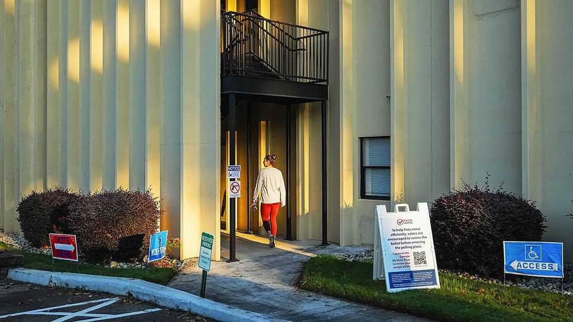

America’s election officials are ready for trouble
Donald Trump has failed to change voting rules. Cities and states are preparing for mischief anyway

Oct 15th 2026
On a fine day in Florence, a city near Phoenix, staff at the local voting centre are doing a tabletop exercise, the euphemism to describe training for election hell. The point is to imagine calamities—fire, power cuts, bomb threats—then have a Plan B, C and D. Officials have always made some doomsday preparations, but this year’s exercise is more thorough, and the range of threats broader. What, for example, should they do if federal law-enforcement agents show up at the polls?
The staff run through the protocols. Monitors from the Department of Justice (DoJ) can stay if they have an official letter, and indeed the government has said 1,000 will be dispatched across the country. Any other agents must leave unless they are themselves voting; Arizona law mandates a perimeter of 75 feet (25 metres) around precincts. “If they refuse to leave, that’s when the scenario becomes a scenario,” says an election worker in the recorder’s office in Pinal county, of which Florence is the seat. In other words: call the sheriff.
Pinal is a Republican county. A portion of it lies in Arizona’s 6th congressional district, one of several dozen competitive House races in the midterm elections on November 3rd. Our forecast suggests Democrats will flip the House and possibly the Senate, too. The nagging concern is that Donald Trump may try to subvert the election’s legitimate results.
His effort to overturn his loss in 2020 alerted everyone to the many pressure points in America’s decentralised election system, and the lengths he might go to squeeze them. So far, his many attempted interventions this year have amounted to little, with Congress and the Supreme Court blocking his efforts to rewrite voting procedures. States, not the federal government, run elections, and their rules are mostly unchanged from past cycles. However, the executive branch has shifted from being a force to support electoral integrity to one undermining it, and in November the system will be tested once more.
Some changes represent not active interference, but the removal of help. Last year the Cybersecurity and Infrastructure Security Agency (CISA) stopped covering localities’ costs to join a service for sharing cyber threats. Membership in the programme is down by around two-thirds. The upshot is that cyberattacks are more likely to proliferate, reckons Geoff Hale, formerly of CISA. “If a jurisdiction faces one and gets compromised or repels it, but if they’re not sharing information about that attack, then other election jurisdictions remain equally vulnerable.” Similarly, the FBI is said to have no plans to activate its election command centre, which in past years monitored threats and co-ordinated with local officials.
However, election administrators increasingly view the federal government as a threat, too, says Jonathan Miller of Public Rights Project (PRP), a litigation group that represents local governments. Earlier this year the DoJ said it would prosecute officials who let non-citizens vote. Such voter fraud is extremely rare, but the spectre of voting by non-citizens propels the myth of election theft. It is the reason that MAGA activists want immigration enforcement at the polls.
Their presence would be illegal: federal law prohibits government officials from sending armed agents to precincts. On behalf of the city of Denver, PRP has sued the Department of Homeland Security, seeking to pre-empt anything like that on election day. The Trump administration says it has no intention of patrolling precincts, but that it may take targeted action, such as serving warrants against anyone suspected of being an illegal immigrant. Democrats fear that even the threat of agents near polling places will dampen turnout by minorities, who tend to vote Democratic. In a survey by UC San Diego, a third of Hispanics said they anticipate being questioned at the polls despite being citizens. Nearly half say they expect some form of intimidation.
Election experts’ nightmare is that Mr Trump might try to seize voting equipment or ballots. That would break the “chain of custody”, the controls that set out who can handle ballots and where they go, ensuring all are accounted for. Losing custody would make it hard to know whether ballots had been manipulated. “I would feel very uncomfortable about validating those ballots,” says Stephen Richer, a former recorder in Arizona’s Maricopa County. “Then you start going down the dark road of, like, do you have to call a new election?”
Two incidents concerning past elections have primed Democrats to the possibility of meddling. In January the FBI raided an election office in Fulton county, Georgia, and carted away material from 2020. Then in March, Chad Bianco, a Republican sheriff in Riverside, California, seized ballots that had been cast in a statewide referendum last year. Both the FBI and Mr Bianco cited misinformation in their requests for warrants.
Could there be a similar ruse in November’s midterms? The previous incidents occurred long after elections were over, not in the middle of one. Ed Martin, a MAGA agitator, says that the president met this month with Tina Peters, a former county clerk who had gone to prison for giving a fellow election-denier unauthorised access to voting machines in 2021, and whose sentence was then commuted by Colorado’s Democratic governor. Mr Martin, who described Ms Peters’s meeting to an interviewer, offered this cryptic assessment of the midterm elections: “The president’s going to have to do what he’s going to do.”
State and local officials are on high alert. Colorado now requires county clerks to log everything, so that they have clear records if a judge ever orders material removed from their custody. One county official in Arizona says she has made sure her voting-machine vendor has extra supplies, so they are ready if the feds seize equipment. Gabriella Cázares-Kelly, the recorder in Pima County, along the Arizona-Mexico border, says lawyers there have restraining orders drafted if immigration agents show up. “They would plug in a few things, hit print and physically run the document over to a waiting judge.”
Such scenarios remain very unlikely. Yet officials must also contend with election-denial activists, who routinely file nuisance public-records requests and challenges to voter registrations. In swing states such as Georgia, they have also managed to win positions on local boards, with some aiming for statewide office this November. As administrators prepare for “what if” scenarios, there remains the not insubstantial task of getting the basic mechanics of elections right, which can be challenging enough, says Eslir Musta of Arizona’s Coconino County. In his case, that means preparing a mule caravan to serve voters who live at the bottom of the Grand Canyon.
Just half of Americans tell pollsters they anticipate a free and fair midterms. The tighter the margin in either chamber, the more uncertainty there will be to exploit in November. Lawsuits and recounts are now standard in close races. This year control of the Senate may come down to one or two states, including some that are famously slow to count, such as Alaska. A lengthy or contested count requires patience and restraint on the part of candidates. Those are not qualities often attributed to Mr Trump.■
Stay on top of American politics with The US in brief, our daily newsletter with fast analysis of the most important political news, and Checks and Balance, a weekly note that examines the state of American democracy and the issues that matter to voters.